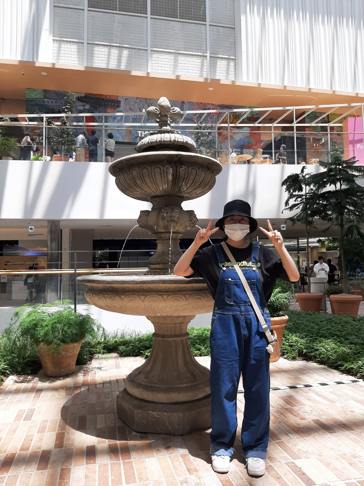

- Name : 강아영
- Birth : 2000. 11. 10
- Address : 경기도 용인시 수지구
- Phone : 010-8806-2770
- Email : kay2770@naver.com
로딩중...
참신하고 새로운 디자인에 대한 관심이 많은 예비 웹퍼블리셔 강아영입니다.
효율적인 시멘틱 웹사이트 구축을 위하여 지속적인 배움을 실천하고
끊임없는 성장을 원합니다.
스크롤바를 내리면 작품을 감상할 수 있습니다.
사용자의 요구사항을 적극반영하고 새롭고 참신한 웹디자인을 추구하는 웹퍼블리셔가 되고
싶습니다.
새로운 코딩기법이나 유행하는 트렌드를 분석할 수 있는 능력을 키워 학원에서 배운
과정과 다른 부분이 있더라도 적극적으로 받아들이고 응용력을 기르기 위해 항상
노력하겠습니다.
저는 디지털디자인에 대해 아무것도 모르던 사람이었습니다. 하지만 우연히 모바일 반응형
웹디자인 과정에 대해 알게되어 무작정 배우기 시작했습니다.
초반에는 코딩하는 것이 과연 적성에 맞는 일일까 고민도 했지만 화면에 무언가를
구현하기 위해 코딩을 직접 해보면서 흥미가 생기기 시작했고 좌절감은 점차 믿음과
성취감으로 조금씩 바뀌었습니다. 이러한 가능성은 저를 웹디자이너로 성장하는 데 있어서
발전하게 할 것입니다.
클라이언트의 요구사항을 적극적으로 반영하여 UI/UX 디자인 할 수 있습니다.
HTML5 & CSS3 시멘틱 페이지를 ZenCoding(EMMET), SCSS로 코딩할 수 있습니다.
페이지 전체의 계층구조를 입체적으로 분석할 수 있는
실무형 코딩기법 Emmet을 사용할 수 있어
업무시간을 단축시킬 수 있을뿐 아니라,
유지보수도 더욱 쉽고 정확하게 처리할 수 있습니다.
SCSS의 가장 큰 장점인 변수와 Mixin 기능을 적극 활용하여
CSS 스타일링을 할 수 있습니다.
Sprite-Image와 IR(Image Replacement)기법 id, class를
남발하지 않고 원하는 요소를 셀렉팅할 수 있는 능력,
CSS3 Transform, Transition, Keyframes을 이용한 애니메이션 효과 구현할 수
있습니다.
JS 플러그인을 사용에 그치지 않고 필요한 기능을 직접 구현할 수 있는
Javascript/jQuery/React 로직구현이 가능합니다.
사용자의 Context와 Needs를 파악하고
Problem을 해결할 수 있는 Insight 도출
시멘틱을 지향하는 HTML/CSS 작성능력 보유,
자바스크립트와 제이쿼리 기반의 로직 구현 가능
협업 웹코딩의 필수 기술인 SCSS를 이용한
CSS 스타일링을 원활이 사용할 수 있습니다.
국내 프론트엔드 시장의 대세 리액트 코드구현,
자바스크립트와 제이쿼리 기반의 로직구현 가능
저의 웹퍼블리싱 이야기 입니다.
질문을 선택하시면 정리된 답변을 보실 수 있습니다.
더욱 궁금하신 점은 면접시 말씀드리겠습니다. 감사합니다~!
본 페이지는 저의 개인 포트폴리오용으로 제작되었으며, 상업적인 목적과 관련이 없음을
알려드립니다.